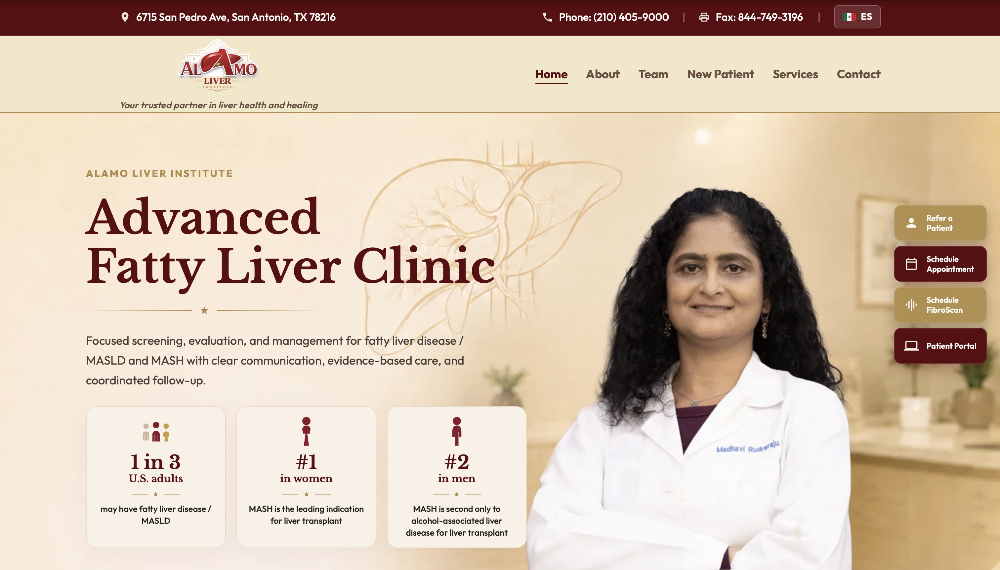

My Work
Portfolio
These projects represent my growing experience with web development, software engineering, automation, and cloud computing.

Completed Project
Alamo Liver Institute Website
I developed a professional website for Alamo Liver Institute using HTML, CSS, and JavaScript. The goal was to create a modern website that presents important clinic information clearly and makes it easier for patients to find services and resources.
What I Worked On
- Built multiple pages for clinic information and services.
- Created clear navigation between important sections.
- Designed the layout and styling for a professional medical website.
- Used JavaScript to add interactive features.
Technologies
Planned Project
Intelligent Email Triage System
I am planning a system that will help organize incoming clinic emails based on priority. The goal is to reduce the amount of time staff members spend sorting through routine messages while making sure important emails receive human attention.
Project Goals
- Organize incoming emails based on priority.
- Identify simple requests that could receive automatic responses.
- Send higher-priority messages to clinic staff.
- Explore cloud services for hosting and automation.
Technologies I Am Exploring
PROJECT IDEA
Email → Priority → Response
Routine messages could receive automated responses, while higher-priority messages would be sent to staff members for review.